| Communicator Seamonkey |
UI Specification
|
|
Dialogs UE Framework send feedback to the component specific newsgroup |
Last Modification:
|
| Author German W. Bauer Initial Creation Date: 09 April 1999 |
Status: Preliminary Specification - use at your own risk, implementation information forthcoming |
Quicklinks:
Overall Seamonkey UI Homepage |
Feature Team |
Older spec, will be updated |
Summary/Overview
This document desribe the cross-application (and where possble cross-application) dialog layouts, as well as general guidelines for creating dialogs that do not fit in the standard templates/categories.Goals
- Keep the dialogs consistent accross apps, platforms - even after functionality may get dynamically added after the launch of Communicator Seamonkey
- Allow for platform-specificness when needed/evidenced by usability testing, such as e.g. for placement of command buttons
- Simplify consistent implementation of common dialogs through use of templates.
- Simplify consistent construction of special dialogs through the use of modules and widgets that can be combined.
Target Audience
The target user for this feature are all Communicator Seamonkey users as described in the Seamonkey PRD
User Tasks
Fundamental Tasks Intermediate Tasks Advanced Tasks Common to all data view panes
- Perform task secondary to main task in the primary window, such as setting preoperties
- Get informed about error messages, potentailly harmful actions or obtain informational messages
Using/navigating dialogs via keyboard only
Design Cheatsheet
Design Philosophy
Web Look and Feel
Sea-Monkey will be the first application to have a platform independent look and feel. To this end, there will be one set of dialogs for both Macintosh and Windows. The issue that has not been decided is whether we will have a cross-platform command button order, or whether we have to implement specific command button orders for Macintosh and Windows/Linux. At any rate the design will be made flexible anf modular so we can implement such a platform specific order of button without re-doing each dialog 2-3 times.
The other things that's different from designing dialogs in tradional OS based resource systems is that the elements do not rely on a fixed position system, but behave more like HTML 4, in that elements resize themselves based on the space thaty their contents request. That in turn is dependent on font size used, localization etc.
Dialog Details
Modeless and modal dialog boxes
Dialogs can either be modeless or modal, or modal but movable. Which one should
be implemented when?
| Modal Dialog | Modeless Dialog | Movable modal | Floating pallette |
| Modal dialogs block users from interacting with any app until the dialog has been dismissed | Modeless dialog boxes let users freely interact with the application or any other app, but are still associated with the 'current' window of the app (unlike a palette window tyoe, see below) | This type of dialog lets the user switch to other apps, but not to other windows in the same app. | Palettes float on top of all document window and interactively lets users change properties. Palettes do not get dismissed, but changes made to properties get refelected in the document immediately. Similar the palette updates its properties display to relflect the current selection. This funct. can be displayed in both a palette window or a toolbar. |
|
|
|
|
Dialog Box Types
Dialog Box
Use for peripheral tasks that do not require the user to go back frequently. Dialog Boxes can use tabs for navigation, opne or more controls to manipulate settings and a row of command buttons to back out of or make settings stick. In the XPFE implementation dialogs will use the native window frame, but the controls are rendered through Gecko
Example:
Alert Box
Use for notification of end users. Include fatal errors in the application, warnings or informal advice (see below). An icon will identify the nature of the alert, usually accompanied by a descriptive text. Command buttons are line up at the bottom and may include all or some of these: an OK button (to acknoledge the message, or to confirm an action) a cancel button to revert the action and a help button.
Example: Entering SSL transmission Alert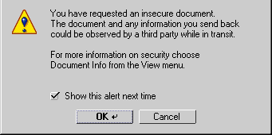
Chooser/Selector
Allows users to pick a font or color, preview can be added here too. Some of these dialogs are going to be native such as the file picker. Use to pick things that are not changed repeatedly
Example: File Picker
Properties dialogs
Use this to let users investigate and change properties of the current context/selection on an ongoing basis.
- Use with Palettes float on top of all document window or with toolbars,
when user needs direct and frequent feedback, and the dialog task is directly
related to the task in the document window.
Example: Editor widget 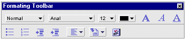
- Use with a movable modal dialog when direct feedback is not required or
the task in the dialog is changing setting not directly related to the task
in the main window, in order to not clutter up the main interface.
Example: Prefs dialog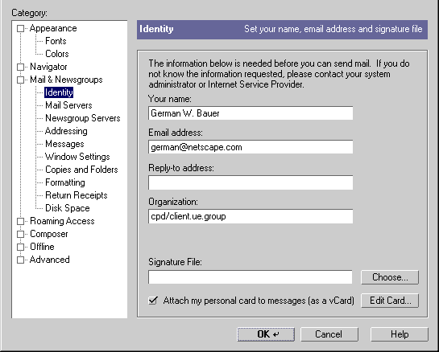
Design Details
General Dialog Layout Framework
All dialogs will follow a similar model and display three main modular sections:
| A content area that contains the widget or message text, resizeable based on content required width |
| A horizontal command button area that will be replace-able (based on platform). Placed at the bottom: Min. height 30px. |
| Optional: A branding area to the left the identifies the owner/origin of the dialogs (may be important in component based world). Placed at the left: min. width 30px. |
| |
|
General Spacing and Alignment
This is the recommended spacing between borders of the dialog and the components.
We recommend a margin of 11 pixels for bottom and left borders and a margin of 10 pixels for top and right borders for each dialog.
A general style sheet for dialog windows will look like this:
#body {margin-left: 11px; margin-right: 10px; margin-top:10 px; margin-bottom:11px; background-color:#CCCCCC; font: message-box;}
Type - Font Usage
Type usage rules are simple:
Rather than specifying a specific font size, dialogs will be subject to style
sheets. As default we will specify the CSS2 font "font: message-box;"
for dialogs
Bold should almost never be used.
Do not use italic.
Italics should be avoided altogether.
Right align text labels next to edit fields.
Keep text labels brief.
Spacing and Alignment for specific widgets
We are expecting different font sizes on different platforms, as well as different text lenghts in different locals. Since we are using a flexible XUL architecture (is this an oxymoron?), which (simplified view for illustrative purposes) is sorta like HTML, it is assumed best to not specify a fixed grid system for dialogs, but rather devising a flexible, expanding system that can grow for larger font sizes or text lenghts and shring when less width is needed. To that end we will be using a box layout system created by Hyatt and Vaughan. In this light it also make sense to not specify the positions of controls in terms of absolute x,y corrdinates but rather coordinate their spacing and grouping relative to each other.
Through the use of style sheets controls will be 'self-aware' of their spacing needs. Thus we describe here the most commonly used controls and the minimal margins they need around them as well as spacing for grouping if needed. In essence we design a "buffer zone" around each widget. Shown here are the basic style attributes for the default look and feel. In case of buttons the normal, ie. the enabled and up state is shown.
Command buttons
| 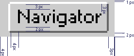 | margin-left: 4px; margin-right: 3px; margin-top: 1px; margin-bottom: 2px; border: 1px outset #CCCCCC; padding-left: 4px; padding-right: 3px; padding-top: 3px; padding-bottom: 2px; background-color: #CCCCCC; |
Minimal button width should be no less than 60px in dialogs (Don't know how
to do this with style sheets/ gecko yet). Attempt to make all buttons on
the row of command buttons the width of the largest button, that is set the
inner padding of all buttons to match the width of the widest button as determined
by the image above.
Image buttons
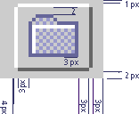 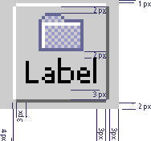 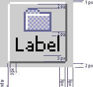 |
|
| margin-left: 4px; margin-right: 3px; margin-top: 1px; margin-bottom: 1px; border: 1px outset #CCCCCC; padding-left: 3px; padding-right: 3px; padding-top: 2px; padding-bottom: 2px; background-color: #CCCCCC; |
Text Labels
| 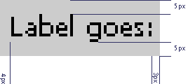 | margin: 0px; border: none; padding-left: 4px; padding-right: 3px; padding-top: 5px; padding-bottom: 5px; background-color: #CCCCCC; |
Text Edit Fields
| 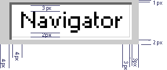 | margin-left: 4px; margin-right: 3px; margin-top: 1px; margin-bottom: 2px; border: 1px inset #CCCCCC; padding-left: 4px; padding-right: 3px; padding-top: 3px; padding-bottom: 2px; background-color: #FFFFFF; |
Combo Boxes
| 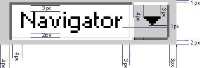 | margin-left: 4px; margin-right: 3px; margin-top: 1px; margin-bottom: 2px; rest TBD |
Popup menu button
| 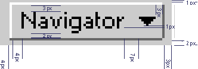 | margin-left: 4px; margin-right: 3px; margin-top: 1px; margin-bottom: 1px; border: 1px outset #CCCCCC; padding-left: 4px; padding-right: 3px; padding-top: 3px; padding-bottom: 2px; background-color: #CCCCCC; |
Pick List Boxes
| 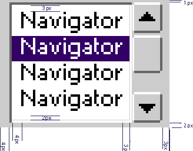 | margin-left: 4px; margin-right: 3px; margin-top: 1px; margin-bottom: 1px; rest TBD |
Check boxes
| 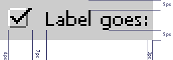 | margin-left: 4px; margin-right: 3px; margin-top: ???px; margin-bottom: 5px; border: none; padding: 0px; background-color: #CCCCCC; |
Radio Buttons
| 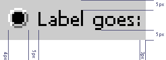 | margin-left: 4px; margin-right: 3px; margin-top: ???px; margin-bottom: 5px; border: none; padding: 0px; background-color: #CCCCCC; |
Progress Bar
| 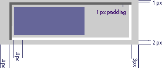 | margin-left: 4px; margin-right: 3px; margin-top: 1px; margin-bottom: 2px; border: 1px inset #CCCCCC; padding: 1px; background-color: #CCCCCC; |
Grouping with horizontal lines
| 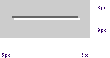 | margin-left: 6px; margin-right: 5px; margin-top: 8px; margin-bottom: 9px; border: none; padding-left: 3px; padding: 0px; |
Grouping with group boxes
| 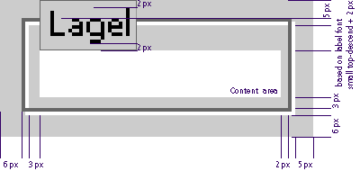 | margin-left: 6px; margin-right: 5px; margin-top: 5px; margin-bottom: 6px; border: 2px ridge #CCCCCC; padding-left: 3px; padding-right: 2px; padding-top: ???; padding-bottom: 3px; |
Typical Command Buttons
OK and Cancel Buttons
Apply Button
Help Button
Default Button in Dialog
Templates for common dialogs
Example: Prefs dialog pane
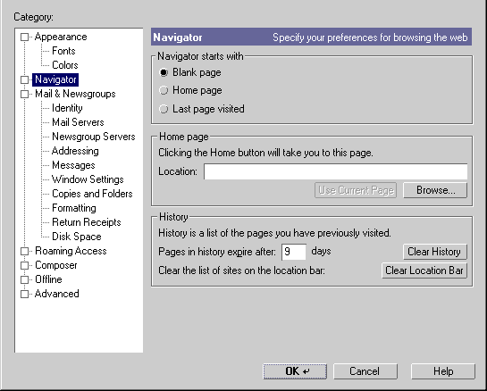
Example: Question dialog
This example shows what it would ook like if implemented a platform specific order of command buttons using the modular approach of having a replaceable command button area at the bottom of the dialog using XUL fragments.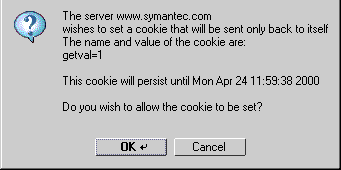 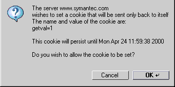
Issues |
Feasibility issues for XUL/XPFE:
need to autosize dialogs wds based on width, height content requests
what can XPFE do: modal, movable modal, non-modal, palettes?
need to platform specific XUL fragments, e.g. possibly for command button div
todo: need to make spec skin-friendly, need globally shared style properties
for that!